The Fire Necromancer's volcanic pterosaur, round 2 (October 27, 2026): the user's pick (round 1's E3, obsidian blade) at Rodan's size, 35, 45 and 55 blocks across its wings, each in three looks (as it was; a half-moon crest on its beak and longer horns; its body like its volcano); its young; its egg (obsidian with magma, sized to hold its young curled up inside). Its volcano is built in the game by the showcase, behind the gallery. Round 1 is in round1/. In the game: /dross showcase boss_designs emberdactyl.
originals.png · lineup.png · all_designs_1.png
Drawn by tools/fire/volcano_preview.py from the blocks the game placed (flat colours: the shapes and the lava, not the textures).


The Emberdactyl at Rodan's size (the user, October 27, 2026: "at least 35 blocks, like a Rodan level"; shown at 35, 45 and 55 blocks across its wings to pick from): round 1's E3, obsidian blade, which the user picked, in three looks: A as it was, B with longer horns and a half-moon crest on its beak, C the same with its body like its volcano. It nests on its volcano guarding its egg, fights mostly in the air and lands for melee (300 health); beaten, its young bursts out of the egg (150).
A: the first round's E3, as the user picked it: sleek and glassy, twin blade horns, the little fin on its beak, a hide of obsidian veined with lava, blades along its wings' leading edges. About 35 blocks across its wings.
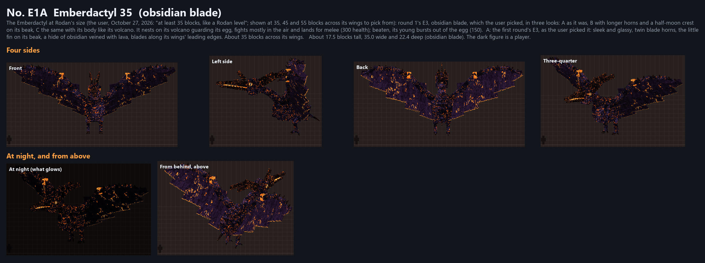
B: the same, its horns half as long again and the fin on its beak made a half moon standing on the bill, a glowing seam round its edge. About 35 blocks across its wings.
C: B's horns and half moon, its body like its volcano: obsidian crusted like cooled lava with lava running down its body, wing bones and wings, two little craters smoking on its back, basalt columns on its shoulders, lava dripping off it. About 35 blocks across its wings.
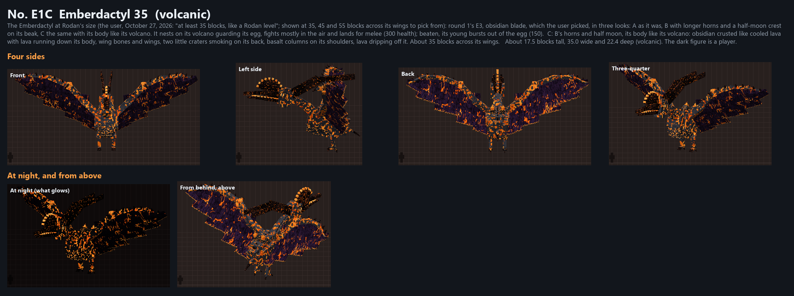
The Emberdactyl at Rodan's size (the user, October 27, 2026: "at least 35 blocks, like a Rodan level"; shown at 35, 45 and 55 blocks across its wings to pick from): round 1's E3, obsidian blade, which the user picked, in three looks: A as it was, B with longer horns and a half-moon crest on its beak, C the same with its body like its volcano. It nests on its volcano guarding its egg, fights mostly in the air and lands for melee (300 health); beaten, its young bursts out of the egg (150).
A: the first round's E3, as the user picked it: sleek and glassy, twin blade horns, the little fin on its beak, a hide of obsidian veined with lava, blades along its wings' leading edges. About 45 blocks across its wings.
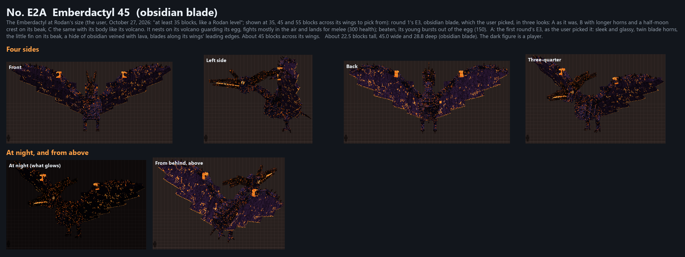
B: the same, its horns half as long again and the fin on its beak made a half moon standing on the bill, a glowing seam round its edge. About 45 blocks across its wings.
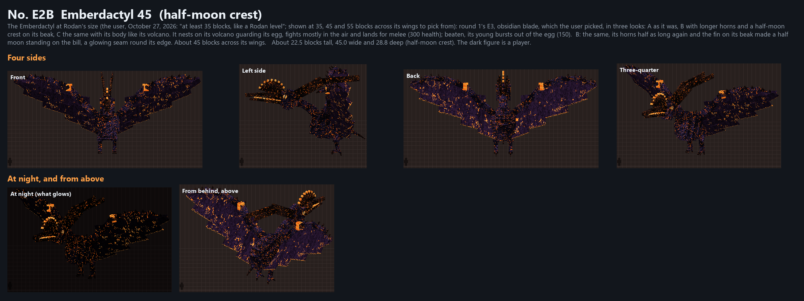
C: B's horns and half moon, its body like its volcano: obsidian crusted like cooled lava with lava running down its body, wing bones and wings, two little craters smoking on its back, basalt columns on its shoulders, lava dripping off it. About 45 blocks across its wings.
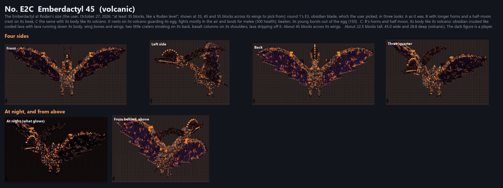
The Emberdactyl at Rodan's size (the user, October 27, 2026: "at least 35 blocks, like a Rodan level"; shown at 35, 45 and 55 blocks across its wings to pick from): round 1's E3, obsidian blade, which the user picked, in three looks: A as it was, B with longer horns and a half-moon crest on its beak, C the same with its body like its volcano. It nests on its volcano guarding its egg, fights mostly in the air and lands for melee (300 health); beaten, its young bursts out of the egg (150).
A: the first round's E3, as the user picked it: sleek and glassy, twin blade horns, the little fin on its beak, a hide of obsidian veined with lava, blades along its wings' leading edges. About 55 blocks across its wings.
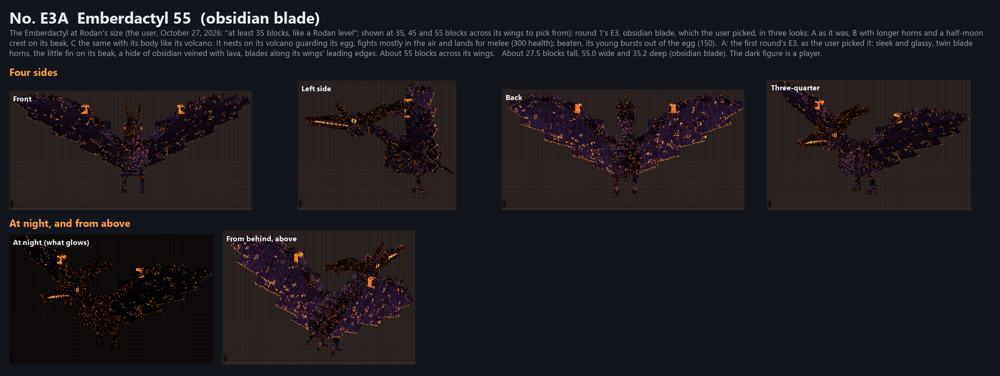
B: the same, its horns half as long again and the fin on its beak made a half moon standing on the bill, a glowing seam round its edge. About 55 blocks across its wings.
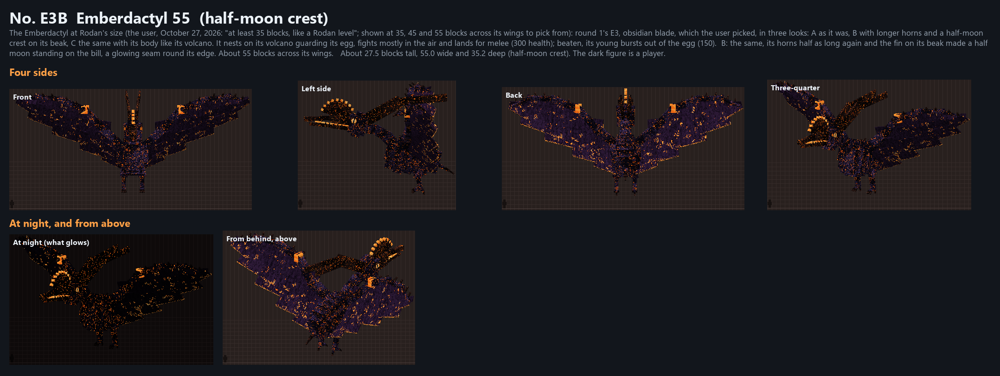
C: B's horns and half moon, its body like its volcano: obsidian crusted like cooled lava with lava running down its body, wing bones and wings, two little craters smoking on its back, basalt columns on its shoulders, lava dripping off it. About 55 blocks across its wings.
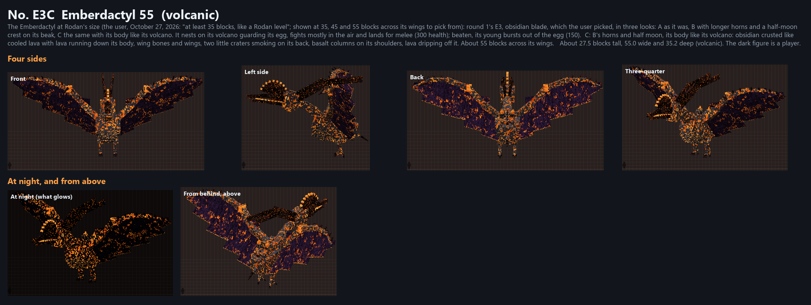
The Emberdactyl's young reborn form, the one that bursts out of the egg when you beat the adult: smaller, sleeker and brighter (the user's words), more agile and weaker (150 health). Here in each of the three looks at half the 45's wingspan (about 22 blocks across); it grows or shrinks with the size picked. Its egg is sized round it curled up (No. E5).
A: the young of the first round's E3, as the user picked it: sleek and glassy, twin blade horns, the little fin on its beak, a hide of obsidian veined with lava, blades along its wings' leading edges.
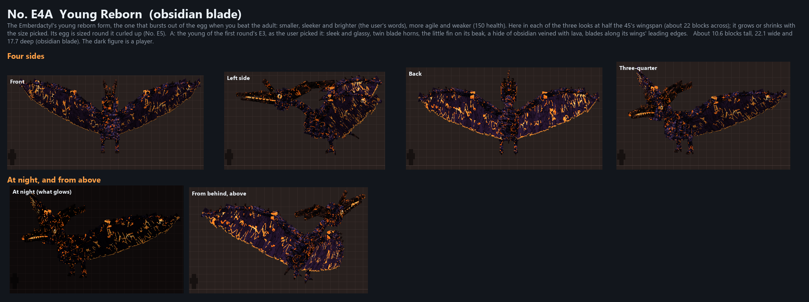
B: the young of the same, its horns half as long again and the fin on its beak made a half moon standing on the bill, a glowing seam round its edge.
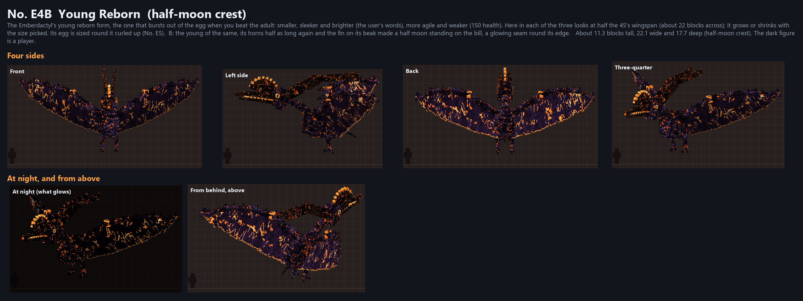
C: the young of B's horns and half moon, its body like its volcano: obsidian crusted like cooled lava with lava running down its body, wing bones and wings, two little craters smoking on its back, basalt columns on its shoulders, lava dripping off it.
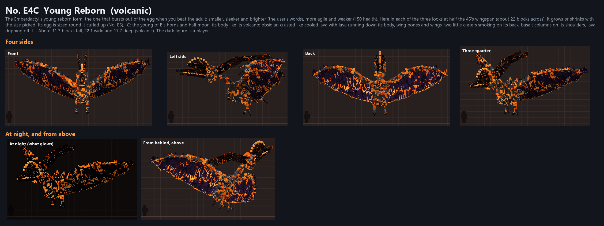
The egg the Emberdactyl guards in its nest on its volcano; nothing breaks it, and when the adult falls its young bursts out. Obsidian split by glowing magma cracks (the user's pick, round 1's obsidian egg with more of the magma egg's look), in three strengths. It's built round its young curled up inside (wings folded round it, its head tucked, its tail coiled), so the young always fits: D shows it, cut open. A-D are the egg for the 45 (its young about 22 blocks across its wings); E and F the eggs for the 35 and the 55.
A: obsidian with a few glowing magma cracks (for the 45).
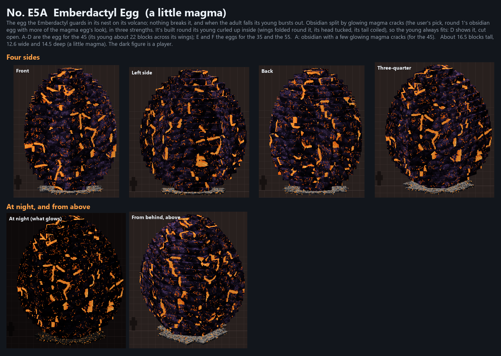
B: more cracks, wider, and a few plates molten through (for the 45).
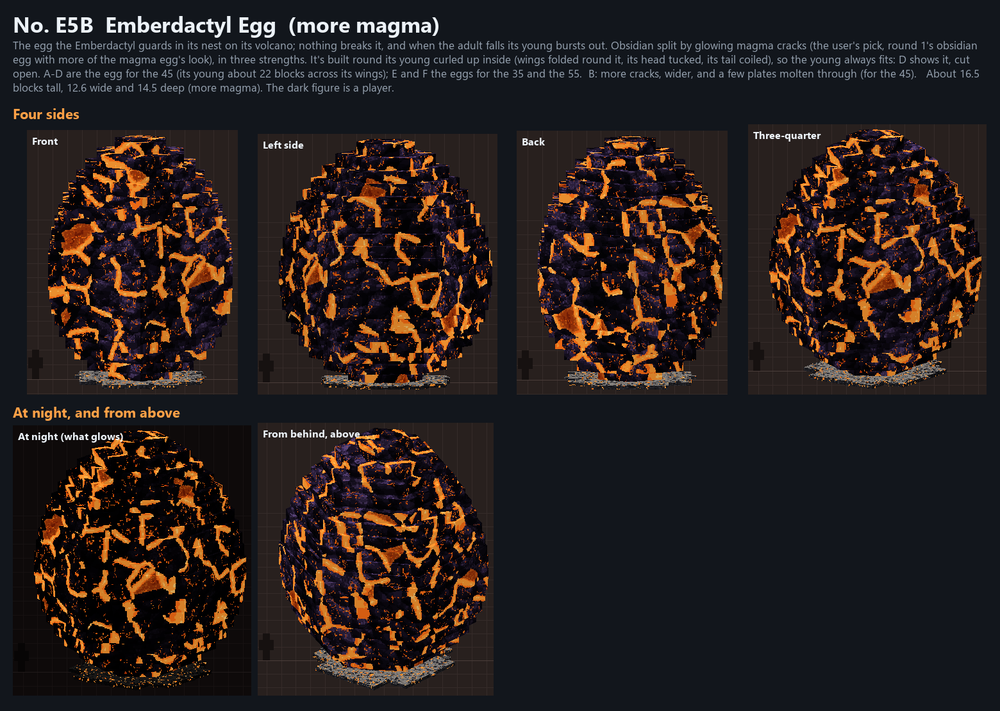
C: cracked all over, many plates glowing (for the 45).
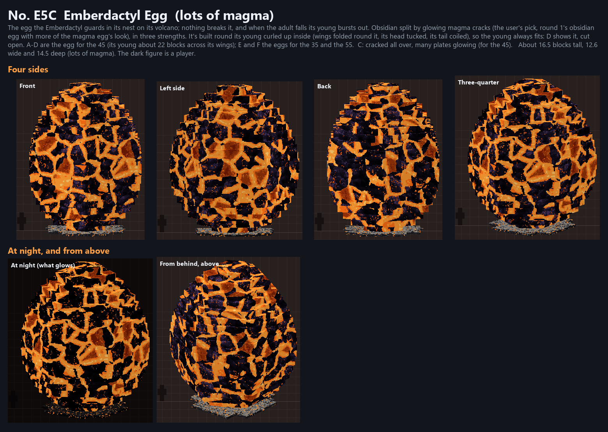
D: B cut open: its young curled up inside (the volcanic look), the shell's inside glowing; shards of shell on the cinders in front.
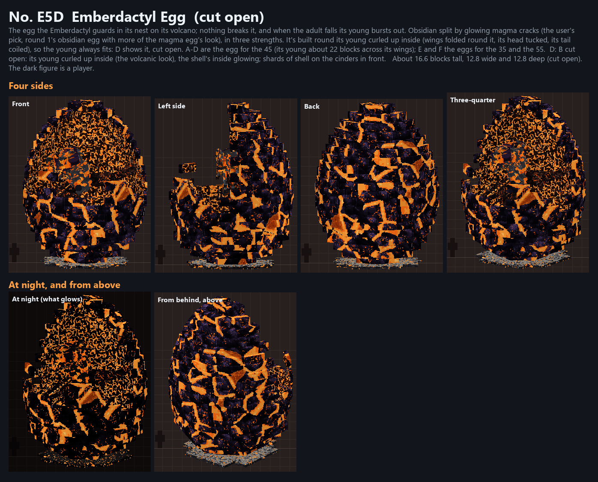
E: B's egg for the 35 (its young about 17 across).
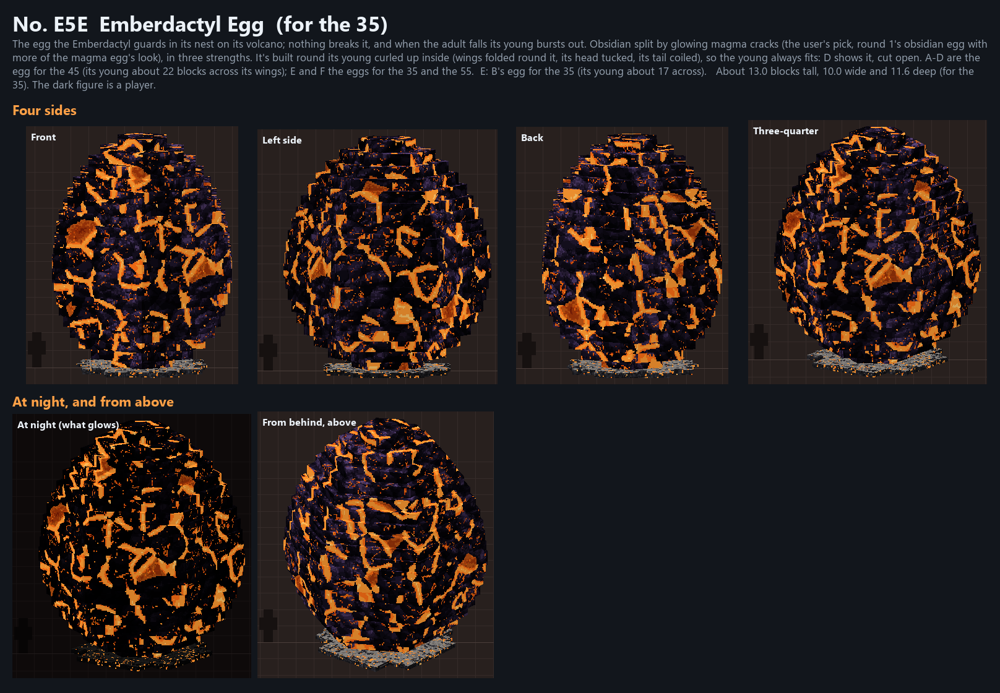
F: B's egg for the 55 (its young about 27 across).
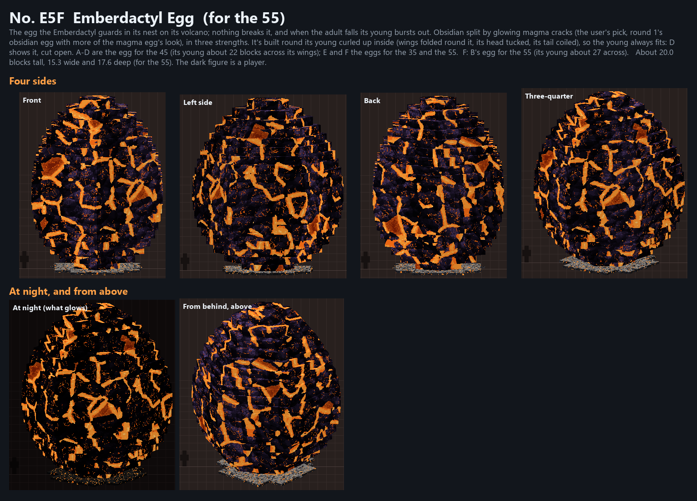